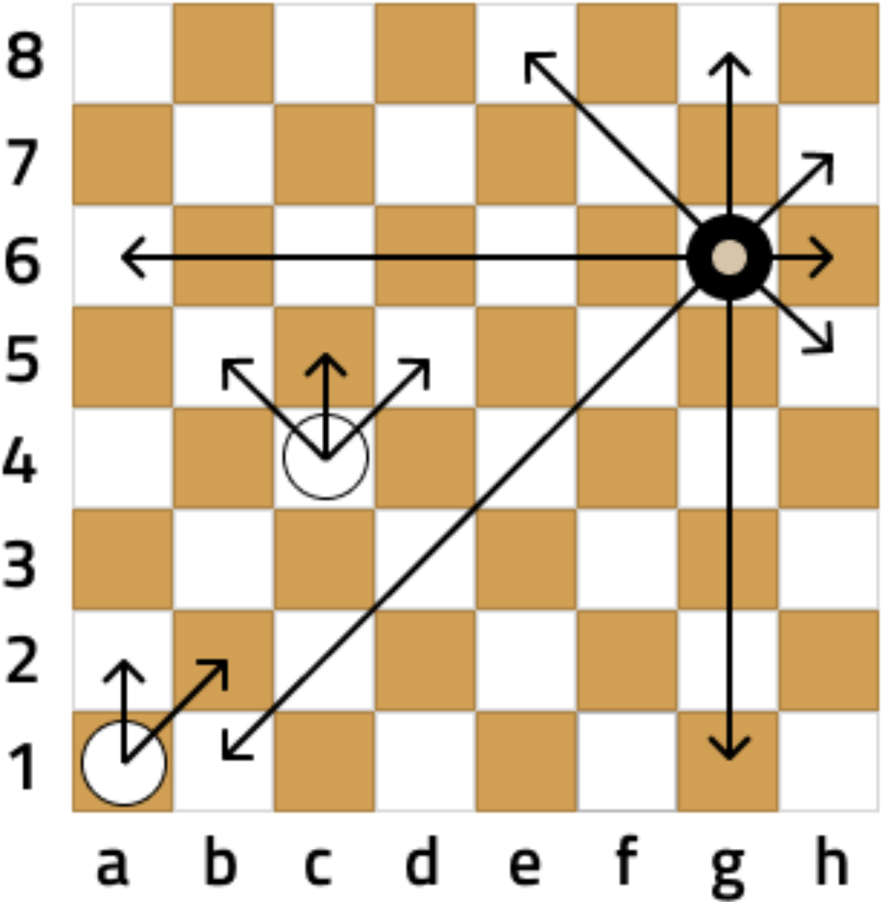
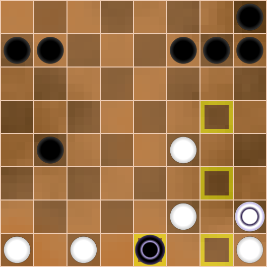
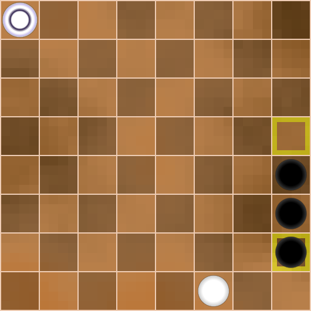
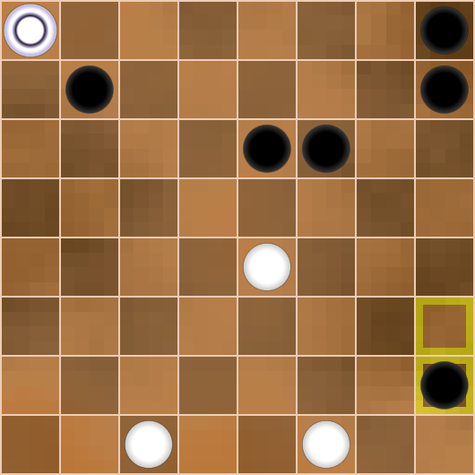

(This is a placeholder title. Edit away!)
This is an example of a specially styled paragraph.
Hello, dear reader!
This book is a sequel to the first book, ‘Meet Dameo!’ That time we got to know the game, and now we are planning a deeper dive into it.
The idea of the second book is to show the beauty and inexhaustibility of this game, the intentions and plans of the sides, and the originality of the players’ thinking through examples of whole games or long fragments of them. Consistency in carrying out the plans of the players and a vivid battle of minds constitute the beauty of any intellectual game.
It is very difficult to comment on Dameo games because of the huge number of moves and variants. Only a computer program can handle such a massive amount, but we are not going to complain and will try to study and understand this little-explored game more deeply by means of ordinary human manual analysis.
We assume that the reader is already familiar with Dameo’s rules, but we will still briefly describe them. Sufficiently experienced players can skip this description and proceed to the next chapter.
So, the rules of Dameo are to a certain extent the same as the rules of international draughts, but there are three major differences, namely:
- a simple checker moves forward in three directions; a king moves in 8 directions, like a queen in Chess to any available number of cells.
- a simple checker may jump over one or more other checkers of its own colour, provided that the field ahead is free; the king does not participate in a line jump (red arrows below on the diagram).
- all captures in Dameo are straight (orthogonal) only; a simple checker may capture forward, backward, or sideways by the short leap; a king may capture by the long leap.
All three differences are shown in diagrams 1a, 1b and 1c.
The rest of the rules (the rule of majority capture, the rule of Turkish strike) coincide with the rules of international draughts.
1a 
1b
1c 
An important distinguishing feature of Dameo is the fact that two kings always defeat a lone king. Due to this, you will win with even a small advantage. This leads to a high percentage of decisive games compared to international draughts, which tends to draw in high level play. The construction of the winning position is shown in the first book in the chapter ‘Two kings against one’.
Well, that’s the end of the introductory part and let’s move on to the main content.
Beginner_2017 vs Busybee
littlegolem.net
Tournament: draughts.cv.DAMEO.16.1.1
2023
Games against player Busybee are always difficult but memorable. Busybee is probably the strongest Dameo player but he also has outstanding results in other games. For example, Busybee has a 100% win rate in such complex games as Shogi and Lines of Action. It is always nice to come across something unexplainable and genius, because it is an unforgettable experience for us ordinary people.
Our meeting had everything: a very complex opening, inventive play from both sides, nonobvious mistakes and nonobvious punishment for them, and a cascade of combination hits.
| 1. | e3e4 | g8h7 |
| 2. | g1g3 | h7g6 |
Diagr.1

Black plays ingratiatingly and is not in a hurry. In fact, Busybee made the move g8g6 in two stages. In Chess, such a loss of time often leads to bad consequences in the opening, but Dameo allows you to regulate the pace of your development.
| 3. | d2d4 | g7g5 |
| 4. | e1e3 | d8b6 |
Diagr.2

White also made the move e1e4 in two stages. I just decided to not rush either and see the opponent’s intentions. White builds up its forces in the centre and isn’t afraid of penetration by the opponent on the field h4:
| 4. | … | g5h4 |
| 5. | d1g4 | h4:f4 |
| 6. | f3:f5 | f6:f4 |
| 7. | e4:g4 | … |
Diagr.3

White has a small advantage in development, as well as 6 pieces
against 4 on its right flank. Take note that White removed the black
checker f6 to avoid the exchange g6g5. In this case Black would have
strengthened on the vertical ‘h’.
All of the above doesn’t mean that White has a clear advantage, just it
would be clear and easy for me to play in such a position. Next, I would
plan to accumulate forces on verticals ‘g’ and ‘h’, planning an attack
and breakthrough on the right flank.
Again I emphasise that Black’s position is quite good, I just like to
play with clear guidelines. In this case it is an attack by White’s
checkers on the right flank.
Since Busybee refused this variant, I decided to take the h4 field myself.
| 5. | f2h4 | e6f5 |
Diagr.4

Possessing excellent combinational vision, Busybee often gives away
the edge vertical, but constructs similar fists of checkers and sets
endless traps.
Now it is impossible to go to the field h5 due to the uncomplicated
strike:
| 6. | h4h5? | f5g4! |
| 7. | h5:f5 | f6:h2 |
| 8. | g3:g7 | f7:h7 |
| 9. | h1:h3 | … |
Diagr.5

Despite the material equality, White’s position is worse due to the weakness of the right flank. Black’s attack on the line ‘h’ is very dangerous.
I decided not to hurry and first closed the field f2.
| 6. | f1f2 | e7e6 |
Diagr.6
The position escalates with each move. Now, when White has already
closed the hole f2, I really wanted to play 7.h4h5. Of course, Black has
many answers, it’s impossible to consider them all, but from a logical
point of view there are two continuations.
Let’s consider each of them.
А)
| 7. | h4h5 | g5f4 |
| 8. | e4:g4 | g6g5 |
| 9. | g4:g6 | f6:h4 |
A splinter like that is hard to tolerate, so:
| 10. | g2h3 | h4:h2 |
| 11. | h1:h3 | … |
Diagr.7

During the game I saw this position in my mind and considered it as
favourable for White. Why? I thought that I could continue the attack on
the right flank by quickly moving forces there (d1g4, f2h4, e2h5). This
plan is clear and understandable, so it’s easier to play this way.
But Black has a second continuation:
B)
| 7. | h4h5 | g6g4!? |
This answer leads to puzzling complications that are impossible for a human to figure out. Therefore, I didn’t risk going for this continuation against a master of combination play like Busybee. What follows is possible:
| 8. | g3h4 | g5f4!? |
Diagr.8

In this position the variants are useless, because they are
inexhaustible. I feared the binding of my centre by b8e5, and the march
of my two pieces on the vertical ‘h’ is broken by the h8 piece. I didn’t
believe that I would get the king and be able to save it.
So I decided to prepare more thoroughly an attack on the right extreme
line (back to diagram 6).
Diagr.6
| 7. | g2h3 | f6e5 |
Black still binds White’s centre, but in an unusual way. Obviously, Busybee provokes me, leaving a hole on the f6. But what did he come up with?
| 8. | h3h5 | b6b5?! |
Diagr.9

What? B6b5?? I wasn’t expecting this move at all. I would never have
come up with it! Despite the sign ‘?!’, the move b6b5 is absolutely
grandiose in its plan, but the problem is that I found an unexpected
refutation. What is Black’s plan against the h4h6 attack?
Let’s see!
| 9. | h4h6? | f5g4!! |
The white checker moves to d5 directly under the bind.
| 10. | h5:d5 | g4:g2 |
Black knocks out the pillar of White’s position - checker f2.
Diagr.10

Further there are possible insignificant permutations of moves, but we see that after
| 11. | h6:f6 | f7:f5 |
| 12. | f2:h2 | b5c4! |
Diagr.11

Black undermines White’s centre, gets material advantage and a won
position.
A crazy combination idea! I must confess that during the game I didn’t
see any of this, but just believed in my opponent.
Suddenly I saw that instead of a reckless attack I could
counter-attack and the hunter would become the fowl!
Let’s go back to the diagram 9.
Diagr.9
In Black’s position the dark squares are weakened, and it is possible to use this disadvantage with an oblique hit if there is a confrontation of squares in the centre. But where are the squares? If they are not there, we will create them!
| 9. | f2c5! | b5:d5 |
| 10. | e3c5! | e5:e1 |
| 11. | c5:g7 | g6:g8 |
| 12. | d1:f1 | … |
Diagr.12

Despite the material equality White has an advantage, as Black is behind in development and has no counterplay. Busybee decides to simplify the position by exchanges.
| 12. | … | f5f4 |
| 13. | f3:f5 | g5:e5 |
I didn’t like the active centre piece e5, so I decided to exchange it.
| 14. | b1e4 | e5:e3 |
| 15. | d3:f3 | c8e6 |
Diagr.13

I thought that the advantage in development and the twofold superiority in forces on the right flank would give me an excellent chance of victory. This is true, but White’s position has one disadvantage: the pieces are still fragmented and, as a consequence, have little interaction. With this in mind, Busybee carries out a plan with a sharp build-up of forces in the centre to attack White’s most vulnerable area between the flanks.
| 16. | h1g2 | e8e7 |
| 17. | c2d3?! | … |
Diagr.14

Perhaps, this move loses all the advantage. White closes the hole d3, but opens the field c2, and Black instantly uses it. Better was 17.b2b3.
| 17. | … | d7f5! |
Now the field g5 is inaccessible for White.
| 18. | g2g4 | b7d5! |
| 19. | b2b3 | … |
White finally closes its weak fields on the left flank, but Black makes a capture of the centre.
| 19. | … | b8e5 |
| 20. | g3g5? | … |
Diagr.15

White decided that it was time to take action after consolidating his forces. I convinced myself that neither e5f4 nor d6f4 is dangerous for me. In addition, c7f4 isn’t valid, because at the end of the variant the g5 piece gets on the c7 square with two extra pieces.
This is true, but the intention to outsmart Busybee in the combination game turned out to be too naive.
| 20. | … | d5c4!! |
Busybee gets rid of his checker, which hinders Black in all variants.
| 21. | d4:b4 | … |
What else to do? Another capture would lead to the loss of a checker and Black’s powerful centre position. I won’t catch a chance there.
| 21. | … | c7f4 |
When there isn’t a d5 piece, this strike is very strong.
| 22. | g4:e4 | e5:g3 |
| 23. | g5:e5 | e6:e4 |
Diagr.16

Even though there are equal pieces on both sides, Black’s position is
won as Busybee can get 2 kings. One of them dies in the a1—c1 trap, but
the other survives.
This was clear enough to me, but only a few players know my character.
In lost positions I often play the strongest.
It’s easy to play when everything on the board is good for you, but how
hard it is to gather yourself at a critical moment and find a chain of
the best moves with the faint hope for a draw! Perhaps my innate
optimism helps me in this regard. Anyway, out of all the games I won, I
had a very bad position in 30% of them.
So, let’s look at the diagram.
Firstly, we need to prevent Black from getting 2 kings. To do this, we
take control of the f3 square.
| 24. | f1f2! | g3h2 |
| 25. | c3a5 | … |
Secondly, we organise our own counter-play. It is necessary to constantly keep the opponent in suspense.
| 25. | … | e7f6! |
Diagr.17

Take note of Black’s last move. This is a very multidimensional move. Checker f6 goes to help checker e4 to make a breakthrough on the field f3. But why didn’t Black play d6e5 for this purpose? Then Busybee would save 1 tempo! But the d6 piece should go to c5 and close the c6 piece if White gets a king on c8. In this case White’s king is caught by the way g8h7.
Given this reasoning, I concluded that it is necessary to attack the black pieces on the last row to destroy the trap for the future king on c8.
| 26. | h4h6! | d6c5 |
| 27. | h5h7! | … |
Diagr.18

White fights with all its might! Threatens h6g7, and at any capture White gets a king either on g8 or h8. In this case White’s king will attack Black’s checkers with tempo! What should Black do?
The situation seems to be out of control, but Busybee finds a stunning manoeuvre with the sacrifice of 3 checkers!
| 27. | … | c6b5!! |
| 28. | b4:b6 | f8g7!! |
| 29. | h7:f5 | h2g1 |
Diagr.19

Crazy position! White has 3 extra checkers and its turn to move, but
the black king is stronger than the storm!
What should White do?
I realised immediately that it was bad for me:
| 30. | c1b2 (c1c2) | g1f1! |
0:2.
Black king from the rear attacks 2 checkers on vertical ‘f’ and then
destroys everything in its path.
Doesn’t help and loses immediately:
| 30. | f5e6 | g1:b7 |
0:2, as the black king controls the 7th horizontal, preventing any breakthrough.
For this reason, it’s no good:
| 30. | b3a4 | g1:b7 |
| 31. | a4a6 | b7a7 |
0:2.
A counterpunch for the majority doesn’t help either:
| 30. | c1d2 | g1f1! |
| 31. | d2e3 | … |
Diagr.20

Original and beautiful, but no more.
| 31. | … | f1:c3 |
| 32. | d3:b3 | e4:e2 |
0:2.
Let’s go back to the main diagram 19.
Diagr.19
Being in a desperate situation, White finds the best move.
| 30. | b3c4! | … |
A sign of ‘!’ for persistence and ingenuity even in this position.
Now, in the case of an erroneous
| 30. | … | c5:e3?? |
| 31. | b6c7 | g1:b1 |
| 32. | a1:c1 | e3d2 |
| 33. | c7d8 | d2e1 |
Diagr.21

There are two paths to White’s victory here:
A)
| 34. | h6h7 | e1:a7 |
| 35. | d8e8 | h8:h6 |
| 36. | d8:d4 | … |
Then the white king penetrates the h7 square and helps to get the second king, 2:0;
B)
| 34. | f5f6 | e1:g6 |
| 35. | h6:f6 | … |
Then White gets a second king and gradually destroys all black
pieces, 2:0.
What a turnaround!
But Busybee takes the king out of the danger zone:
| 30. | … | g1:b7! |
| 31. | c4:c6 | … |
Diagr.22

It seems White has some chance of salvation, as it is eventually possible to distract the black king with the sacrifice of a couple of checkers, but look what Busybee has come up with!
| 31. | … | e4f3!! |
Who would think of such a move? Fantastic!
| 32. | f2:f4 | b7h7! |
Diagr.23

A rare and beautiful fork. White again has 3 extra pieces, but the position clearly shows the power of the king in Dameo.
| 33. | d3e4 | … |
There’s nothing better.
| 33. | … | h7:c7 |
Diagr.24

Black king not only controls the 7th horizontal, but also threatens to win the checker a5 by direct attack from the fields a7, b8, c8, but even now White sets the last trap!
| 34. | a1b2! | … |
Fortunately, ingenuity didn’t leave me and I found the strongest move.
Now, in the event of a direct attack:
| 34. | … | c7a7? |
| 35. | a5b6 | a7b8 |
| 36. | b6c7 | … |
Black is forced to capture the checker b2, and White gets a king:
| 36. | … | b8:b1 |
| 37. | c7d8 | … |
The fight goes on for a long time, and White’s chances increase.
But Busybee found the right rearrangement of his checkers.
| 34. | … | c7b8! |
| 35. | b2a3 | a8b7! |
Diagr.25

Black prepared the sacrifice b7a6 followed by b8a8. White has no defence against it.
| 36. | a3a4 | b7a6 |
| 37. | a5:a7 | b8a8 |
Diagr.26

White gave up.
0:2.
Well… Despite losing, I really enjoyed fighting in this game. After all, beauty is above all, and I’m glad that I created it with my partner.
Ray Garrison vs Beginner_2017
littlegolem.net
Tournament: draughts.cv.DAMEO.5.1.1
2018
Sometimes I come across games that are impossible to analyse because of Dameo’s infinity. Yes, sure, I can dive deep enough, but the abundance of variants and continuations discourages me.
Now I’m going to tell you about one such game. It will be a long story, but I’d like the reader to fully feel that an ordinary 8x8 board can be like a cosmos with infinite stars.
My meetings at the board with Ray Garrison are often of a memorable character. Ray is a very pleasant partner and conversationalist; he reads a lot and has a deep knowledge. Although I don’t know him personally, but only by correspondence, I have a strong feeling that I am talking to a gentleman from the 19th century - well-mannered, tactful and friendly.
One of our first fights took place in 2018. I had known Dameo for
less than a year and tried to experiment a lot. I was still a ‘raw’
player, without style or understanding, but with a huge desire and
energy. Having watched a few of Ray’s games before this game, I realised
that he is a classical style player, preferring reliable structures with
traps a1-c1 and h1-f1 against the opponent’s king.
So, I decided to challenge such a strategy…
1.g1-h2 e7-e5
2.e1-g3 d7-d5
3.b1-a2 g8-h7
4.d2-d4 d8-b6
5.c2-c4 …
Diagr. 1 
I won’t dwell on the first moves, as they can be almost any. The main thing is the future plan. It was at this point that I decided to take a radical step to try to throw my opponent off his equilibrium by any means.
5… c8a6?!
6. d1g4 f8h6?!
Diagr. 2 
How to comment on these moves by Black? Any slightly experienced player will see the obvious disadvantages and criticise it. Indeed, Black is exposing its rear and burning all bridges. Once White gets a king, it will be impossible to catch it on the 8th row.
However, such a development has a plus: Black has extra checkers in the struggle along the entire clash line. I expected to suppress White by the number of my checkers and supposed that this pressure will compensate for all the disadvantages of my decision. For example, Black already has a 5 vs. 3 advantage on verticals ‘a’ and ‘b’.
This plan, but only in a less radical form, I sometimes apply it now.
7.a2b3? b8a7
The move a2b3 seemed a bit strange to me. On the contrary, playing for White, I would try to block the vertical ‘a’ by e2b5! and c4:a4. But White loses its sense of danger, allowing Black to create an attack on the flank.
8.h2f4 … (with the idea of f3f5)
8… e8g6
Diagr. 3 
Picture position! Black managed to get an advantage on the flanks, and its square d6-e6-e5-d5 holds the defence in the centre.
9.e2e4 a8a5
10.b2a3 a5a4
11.a3:a5 a6:a4
12.c3b4!? …
Diagr. 4 
Black consistently carries out its plan and the flank attack already looks threatening. Indeed, Black has an advantage in strength (6 vs. 5), as well as freedom for manoeuvres and accumulation of forces. White is constrained and clamped.
Realising that passive defence is unlikely to be successful, Ray resorts to a desperate measure, risking to lose immediately, but builds a trap…
12… c7c5?
It was played with the wrong piece! Believing that the position is won almost automatically by attacking the checker c4, I played the checker c7. I remember that I was afraid of some penetration on a6 and left my checker on a7.
But who would have thought that it needed to protect not the a6 field, but the d7! My move looks very strong, but Ray blasts the position with a landmine hidden in the depths of the board!
13.d3b5!! …
Oh, my God! What is that?
13… с5:a3
14.f3f5! …
Where’s that coming from? What’s happening? I remember sitting there like I was knocked out and didn’t understand anything.
14… d5:h3
15.f5:d7 …
What’s the matter?! With a checker on c7, White’s combination would not work!
15… a4:c4
16.d7c8 b6:b4
17.c8:c2 …
Diagr. 5 
Well, an anomalous position has emerged on the board, where Black has four checkers for a king, and also the dangerous checkers a3 and h3. The problem is that White’s king is so strong that it doesn’t let Black’s pieces even move because of constant hits with free tempo. For example, Black attacks a checker, and White sacrifices it on the next move, and in the meantime moves the king to the necessary place. Black is forced to capture the prey, and White’s king destroys a large enemy force.
Threatens not only g4g5, but also at a chance c2a2, so the
countermeasure seems to be moves e6e5, h8h5 or g7g5.
The choice is wide, but it’s more difficult to make it.
Let’s consider these continuations in order.
I didn’t like the exchange e6e5 for the reason that Black creates its
own fragmented pieces. Against a mobile king this is almost always
wrong.
For example, after
17… e6e5
18.e4:e6 f6:d6
Diagr. 6

I was afraid of this position, as I didn’t see a good defence against
19.c2a2.
And only now in the analysis I found a refutation of this manoeuvre.
19.c2a2? h6g5! (g7g5??)
20.a2:a6:e6:h6:h2 g5:e1
Diagr. 7

What a fantastic changing position on the board! A real
kaleidoscope!
The black king dies on the next move, but so does the white king!
If the white king escaped, things would be bad for Black.
Could it have been foreseen in advance? The white king is suddenly
caught in a trap and Black wins! 0:2.
Let’s go back to diagram 6 again.
Diagr. 6
And yet my intuition didn’t let me down. I rightly was fearing the fragmentation of my pieces. White can use this disadvantage by a crushing combination.
19.g4h5!! h6:h4
20.h1h2! h3:h1
21.c2d1 h1:e1
22.d1:b1! …
Diagr. 8

Threatens 23.b1a2.
If 22… b7a6, then 23.f4e5 and White gets the second king and wins.
Black can catch the white king after
22… b7c6
23.b1a2 f7g6
24.a2:h6 h7:h5
25.f4e5 …
Diagr. 9

2:0.
Let’s return to the main point.
Diagr. 5
This move looks stronger than the previous one. Indeed, Black keeps
compactness of its pieces on the flank and builds up pressure on the
line “h”. Now it would be disadvantageous for White to play c2a2
immediately, because this move should be made at the moment when the
king destroys more than 2 checkers of the opponent. Moreover, Black in
response threatens a counterattack from the g5 field, attacking White’s
3 pieces.
The position on the board is extremely complex and full of combinational
possibilities.
In my analysis I found a move
17… h8h5
18.e4d5 …
Diagr. 10

White threatens to get a second king by using the gap between the
opponent’s flanks. This is a very serious threat and for its realisation
you can even additionally sacrifice the checker f4e5. With 2 kings, you
can torture your opponent indefinitely.
It is bad to play g7g5 because of c2d1! and White responds by taking 6
checkers with a win. It is not easy to find a worthy answer for Black,
for example:
18… h6g5?
19.h1h2! g5:e1
20.h2:h8 e1:b1
21.a1:c1 a3a2
Diagr. 11

22.d5c6 a2a1
23.f4g5! a1:h5
24.h8:a8 …
Diagr. 12

Black is too far behind in development, so in the future White with 3
kings has a great chance of winning.
Immediately loses f7h5 due to a8a7, 2:0.
Let’s go back to diagram 10 and consider a stronger move
Diagr. 10
18… f6g5
Now begins a spectacular shootout, like a cowboy action film.
19.d5d6! g5:e1
20.d6:f8 e1:b1
21.a1:c1 a3a2
Diagr. 13

22.f2g3 h3:f5
23.f8:a1 a7a6!
24.a1:c7 h7h4
25.c7:h7 h6:h8
Diagr. 14

An incredible kaleidoscope of changing pictures again! This variant
demonstrates well the ideas and possibilities of the sides.
So, after the scuffle there was silence and both sides took a break.
I think of the poet Lermontov, who wrote the poem “Borodino” about
the famous battle between Napoleon and Kutuzov in 1812.
One of the bloodiest one-day battles in world history ended in the
evening without a clear winner and it was time to reflect on what had
happened.
Here is a poetic translation of a fragment from that poem:
Twilight descended. All were ready
For dawn refight advancing steady
To last till death us mutes…
Here drums-performed march hits the ear,
But enemy no longer near.
It was good time to make wounds clear,
To fallen give salutes.
Now, in diagram 14, it is time for both sides to think hard about the position. Tactical thinking must now give place to strategic.
Black’s task is to create a column of four checkers along the line
‘h’ and exchange the white checker on h1. In this case, the white king
will not be able to occupy the h1 square, as it will be immediately
captured, 0:2.
Anticipating this, White should give up the h1 square, but if the black
king appears there, it must be destroyed immediately. To do this, White
should keep its c1 checker until the very end.
As we can see, both sides must act very precisely and carefully.
26.c2g2 h8g7
27.g2h2 h5h3
29.h2c2 g6h5
30.c2h2 g7h6
Diagr. 15

Of course, there are some branches, and the order of moves may be different. But it is important for us to see the final idea.
Black has built an attacking column, and the white king is in danger. Then White surrenders the entire right flank and builds a defence on the a1 square.
31.h2g1 …
You cannot move along the second horizontal line, because after h3g2 the white king is captured.
31… h3h2
32.h1:h3 h4:h2
33.g1d4 …
White can make any move that controls the a1 square.
It is obvious that the first black king will be captured, and the second
king can only appear after sacrificing one more piece.
The result is a draw, 1:1!
Well, let’s look at the third continuation from diagram 5.
Diagr. 5
Black with a tempo attacks white pieces and at the same time
threatens to catch the king by b7c6.
What else can be demanded from such a strong at first glance
solution?
I noticed a long time ago that in abnormal positions simple logical
moves do not lead to the goal, because these kinds of positions require
abnormal decisions :).
It would seem that the most obvious move g7g5, which most players would make, is the best solution, but alas, White has an impressive counter-punch from which goosebumps run down my skin.
Again, the move g7g5 exposes Black’s rear too much, in particular the g7 square, and White emphasises this fact with a crushing combination:
17… g7g5
18.g4f5!! g5:e3
19.g2f3! e3:g3
20.h1h2 h3:h1
21.c2d1 h1:e1
22.d1:a2 …
Diagr. 16

This is how the weakness of the g7 square turned out so badly for
Black!
White has a second potential king (f4), an extremely mobile king on a2,
and the a1-c1 trap. All these factors must lead to victory for White,
2:0.
Of course, it is impossible to show all the moves and variations for
both sides from the position in diagram 5, as this would take up a lot
of space and time, but I believe the general picture is clear to the
reader.
The second continuation h8h5 allows Black to keep the position under
control, but this only became clear as a result of analysis.
Let’s go back to the main flow of the game and to Diagram 5.
Diagr. 5
Of course, I didn’t see anything like this during the game. I got scared and gave up on the above methods of defence.
But I had to find another line of defence! How did I reason? The white king is very strong and to limit it somewhat, I should not create weak fields in my camp, i.e. keep the checker massif compact. Besides, I wanted to keep my a3 and b4 pieces at all costs to scare my opponent with a breakthrough on both flanks.
17… h6g5!
This move is the straw I grasped at when diving to the bottom. Indeed, Black does not weaken the g7 field, maintaining a monolithic mass. Now all the above-mentioned combinations do not work. On top of that, I’m preparing a stealth strike.
18.g4h5 g7h6!
An unexpected answer.
19.h5:f5 h3h2
20.h1:h3 g6g5
21.f5:h5 h6:h2
Diagr. 17 
Among other things, Black threatens to capture the king after
b4c3.
Here, nothing gives White a combination
22.e4e5 e6:g4
23.f2e3 h2:f2
24.c2:a2 …
Diagr. 18 
If the white king had taken a different route and captured the b4 checker, it would be caught after b7b6. But of course, Ray would have seen it.
24… b4b3!
25.a2:a8 b3b2
Diagr. 19 
and Black’s position is at least no worse.
Back to the main game and diagram 17.
Diagr. 17
22.f2g3 h2:f2
23.c2:g2 …
It’s an easily understandable exchange of a person who wants to feel solid ground under his feet.
Diagr. 20 
I considered f7f5 here, but the attack on 2 pieces often leads to trouble. White has a strong answer:
24… f7f5?
25.e4e5! …
1.the 2x2 exchange
25… e6:g4
26.g3:e5 b7c6
27.g2a2 …
led to a quick victory for White due to the dispersed Black forces;
2.the 1x2 exchange
25… f5:h3
26.e5:e7 h3h2
27.e7f8! h2:f2
28.f8:g2 …
2:0. I suggest the reader to calculate these variants in his mind.
I decided to leave the move f7f5 in reserve, and in the meantime set a small trap.
23… b4b3
Diagr. 21 
Firstly, you shouldn’t despair, you should fight on! Secondly, Black
straightens the broken checker formation b4-a3, it will not allow white
king to destroy them with slalom.
Thirdly, White’s active attack g3e5 in view of e6d5 and f7g6 gives
nothing to White, Black catches the opponent’s king and threatens to get
a king with material advantage.
Fourthly, I provoke my opponent to an attack
24.g2a2 b7a6
25.a2:a4 b3b2
Diagr. 22 
If Black gets the king, White may lose. Maybe this fact frightened my
partner a lot and he refused to do it.
But there was really nothing to be afraid of!
26.a4d1! …
White potentially threatens to play c1c2, but so far the king is caught. However, with g3e5 White can destroy the opponent’s position, so I intended to play here
26… e6d5
27.d1:g6 b2b1
Diagr. 23 
28.g6g8! b1:g5
29.g8:g1 f7g6
Counting up to this position, I made sure that the white king is still caught, but in the heat of the fight I didn’t realise that despite Black’s material advantage, White wins!
30.g1:g8 h8:f8
31.e4e5! …
Diagr. 24 
White is very much ahead of the opponent in development and gets two kings at once! Black’s position is lost, I suggest the reader to check it by himself.
Thus, the direct attack 24.g2a2 with high probability led to White’s victory.
Let’s go back to the main diagram 21 again.
Diagr. 21
Ray probably considered the move
24.g3e5 …
but saw that after
24… e6d5!
25.e5:c5 f7g6
26.g2:g8 h8:f8
Diagr. 25

Black first gets a king and has an extra checker.
In the position of diagram 21 Ray had a quiet move f4e5. The
advantage of this move over g3e5 is that the vertical ‘g’ is not opened,
and the white king is not caught! After the answer h8g7 there will be an
exchange on the e7 square, this creates an extremely difficult game for
both sides, in which it is easy to make an unforced mistake.
For example:
24.f4e5 h8g7
25.e5:e7 f7:d7
26.g2a2? b7a6
27.a2:a4 b3b2
Diagr. 26

Suddenly it turns out that it is bad to play a4d1 because of b2b1, and White is forced to capture the checker d7, clearing the way for the black king, 0:2.
As we can see, in this edition the attack 26.g2a2 is ineffective and should be limited to capturing space by 26.e4d5 with an extremely complicated game.
But White missed this chance to fight for the win.
It was psychologically difficult to play under such a pressure of
threats. Ray wanted clarity and went for further simplification of the
position.
Diagr. 21
24.c1b2?! b3:b1
25.a1:c1 f7f5!
Diagr. 27 
Checkers a1 and b4 have disappeared from the board, so White’s possibilities are sharply narrowed. But this should have been foreseen in advance!
Without checker a1, the a2 field is inaccessible to the White king.
In addition, the black piece b4 made Black’s position lattice, and now
this piece is missing.
For example:
26.е4е5? f5:h3
27.e5:e7 h3h2
Diagr. 28 
With checkers a1 and b4 White wins by simple e7f8 as shown above, but in the position of diagram 32 only Black can win, as White has little strength and few possibilities against the opponent’s offensive. I suggest the reader to convince himself of this.
Let’s look again at diagram 27.
Ray had one last opportunity to continue the fight with a combination:
26.f4g5! f5:h5
27.e4e5 e6:e4
28.g3f4 e4:g4
29.g2:a1 b7a6
Diagr. 29 
Learn to evaluate such positions without counting variants!
White’s task is to repel the attack on the two outermost
verticals.
To do it move checker c1 to vertical ‘a’ and exchange it for 2 black
pieces, white king gets to the field a8 and controls from there the
fields h1 and a1. If Black gets to h1, its king will die immediately
after a8a1.
It seems to be a draw!
What if Black refuses to exchange on line “a”? Then White will get a second king, which is only advantageous for White.
I’ll show the demo variant below for the sake of order:
30.c1b2 h8h6
31.b2a3 h7h4
32.a3a4 h6h3
33.a4a5 a6:a4
34.a1:a8 h5h2
Diagr. 30 
Then White makes any move with king controlling the a1 field.
Simplifying the narrative:
35.a8a2 h4h1
36.a2a1 h1:e1
37.a1:h1 h3g2
Draw! Well… That would be a fair result of such a battle!
Let’s go back to diagram 27 from the real game.
Diagr. 27
Perhaps Ray simply did not see the continuation 26.f4g5. I think he was very tired by this moment and was prone to make drastic decisions.
26.g2a2? …
It is likely that this abrupt move is the crucial mistake.
26… f5:h3
27.a2:a8 h3h2
Diagr. 31 
28.a8a2 …
It’s already a surrender of all positions. Now White loses
immediately. Unfortunately, Ray didn’t have enough strength for the
whole game, especially such a tense and complicated one. Each of us has
our own limit, own ceiling, own peak. Perhaps Ray did not take into
account that the king on h1 attacks in two directions.
The move 28.a8a1 prolonged the struggle, but did not save the
game.
In this case, Black would first distract the king with 28…b7a6, and then
play 29…h2h1, attacking two pieces in two directions and getting a
winning endgame.
28… h2h1
29.a2b1 h1:e5
30.b1:b8 …
Diagr. 32 
Black’s material advantage is too great. Still was played:
30… e6f5
31.b8e8 e5e1
32.e8h5 …
Diagr. 33 
32… e1:a1
33.h5:d5 f6g5
34.d5:h5 h7h6
White surrendered, 0:2.
Let’s summarise.
The game turned out to be extraordinarily complicated, but I believe the reader could learn a lot, as I did.
My opening plan almost succeeded, but I thought that winning was
already easy, and Ray punished me for that with a brilliant combination.
After getting the king, White also had a great chance of winning, but I
woke up and started to fight back desperately. The position was full of
complex variants and perhaps suited my style more than Ray’s. With each
move my energy was rising and Ray’s was falling.
My move 23…b4b3 had the purpose to frighten the opponent and put
pressure on his position. If Ray had kept his cool, he could punish me a
second time for my risky style of play, but I was lucky.
Another opportunity for Ray to put me in big trouble was move 24.f4e5.
To be honest, I don’t know how the game would have ended then. Let it
remain a little secret of our meeting.
White played better for the lion’s share of the whole game, but in the
end Ray didn’t have enough strength.
This memorable victory allowed me to get 1 point ahead of such
monsters as Busybee and Diamante at the last moment and take 1st place
in the tournament.
Ray Garrison performed very well, taking the place right behind us.
Tony vs Beginner_2017 littlegolem.net Tournament: draughts.in.DAMEO.92 2019
Game URL: https://www.littlegolem.net/jsp/game/game.jsp?gid=2097149
PDN record URL: https://www.littlegolem.net/servlet/sgf/2097149/game2097149.pdn
My opponent Tony specialises more in games such as Hex and Havannah,
in which he has achieved excellent results and won many tournaments.
Perhaps it explains his confident, straightforward and purposeful style
of play in Dameo. However, Dameo involves a lot of tactics, in which
Tony was less successful. Nevertheless, when playing against Tony, I
always felt somewhat uncomfortable, often got into unpleasant positions,
and frequently escaped by tactical means. The persistence and intensity
of our duels exhausted me to the limit in most cases.
I believe that if Tony had regarded Dameo with the same passion as Hex
& Havannah, he would have been among the top five players in Dameo,
and perhaps even among the top three.
1.e3e4 e6d5
It’s a bizarre start, but each player is pursuing their own goals. White chooses a somewhat wait-and-see tactic, depending on Black’s moves. In Dameo, this is quite possible provided that the positional play is competent. Yes, White is giving the initiative to his opponent, but as long as there are many checkers on the board, this is not critical. Black’s response shows that I am aiming for an asymmetrical open position with a wide range of moves.
2.e2e3 f6e5
3.e4:e6 e7:e5
Diagr. 1 
So, if we compare the advancement of the pieces on both sides, we can
conclude that Black is two tempos ahead of White in development.
Is this good or bad? It is impossible to answer this question at the
beginning of the game. The role of the development advantage increases
as the number of pieces on the board decreases. However, if the position
is closed, such an advantage often leads to ‘overdevelopment’ and a lack
of spare moves.
Based on these considerations, Tony subsequently tries to turn my trump
card into my weakness.
4.d2d4 g8g6
5.d1d2 f7h5
6.b1e4 d7e6
Diagr. 2 
An important strategic moment in the game!
I had a choice of which path to direct the game, and I chose the path of
closedness and confrontation in the centre. Of course, there was another
path, connected with the moves e7e5 or d8b6, which leads to the opposite
game - open and free.
TODO: The above mention of e7e5 doesn’t make sense from this position. d8b6 is possible, but e7e5 seems confusing without a move number label.
How did I think at that moment? I rejected the second path, as it
seemed to me that exchanges would lead to the depletion of the game. But
I did not understand then that Dameo is not ordinary checkers and that
even endings of the type 3 against 3 simple checkers have a very sharp
character. Now I would try to open up the game and keep the initiative
in my hands, but at that time I had been playing Dameo for less than a
year and chose the first path.
So, with the move d7e6, I fixed the centre. My opponent’s left flank is
weakened due to the absence of the b1 checker, so it is not easy to
organise the defence of this flank, as the moves b1a2 or b1b3 are not
possible. I organise an attack on both flanks to force White to suffer
from a lack of space.
7.e1e2 …
The checkers e2 and d2 usually serve against the oblique hits e6c4
and d6f4, but these hits are not yet possible. As White, I would have
preferred, without losing a single tempo, to immediately build a redoubt
on the left flank by means of c1a3 - b2b3 - c2a4.
In this case, the wide barricade d4-d3-c3-b3-a3-a4 would hold back
Black’s attack. Next, I would move the d2 checker to f4, obtaining a
more or less harmonious position.
However, Tony has his own thoughts on the matter. He plays simply and confidently, hoping that a strong centre will allow him to repel any flank attack.
7… g7h6
8.g2h3 h8h7
9.g1h2 b8b6
Diagr. 3 
Black is harassing his opponent on both flanks. I am intimidating Tony by capturing the h4 square, but I am actually planning an attack on the other flank.
10.h2h4 d8a5
11.b2a3 …
Diagr. 4 
Here, I planned to play b7a6 and a6a4, but suddenly saw the exchange
a3b4.
Thanks to the stronghold d4 White would use this kind of exchange to
extinguish Black’s initiative in this part of the board.
At the time, this discovery became a complete surprise to me, and I
regretted that I had engaged in a closed game with Tony (6…d7e6).
Initially, I considered disrupting White’s centre with e6f5, but it
would be quickly restored. Therefore, I decided to accumulate my forces
on the flank.
11… c7c5
12.c2b3 e8d7
13.d2b4!? …
Diagr. 5

Tony is provoking me to invade the light squares, but could this
really be advantageous for him?
I have a choice: to capture the c4 square in three ways or to abandon it
completely.
It is important to note that invading the c4 square leads to an attack
on two pieces, not just one!
Option 1
It immediately became clear that it is bad to play e6c4, since after
the exchanges, the d6 checker is distracted, and Black ultimately
remains without a checker.
I suggest that the reader verify this in his mind.
Option 2
The move c6c4 also leads to material losses for Black due to the simple b3a4. I didn’t want to look for salvation in a panic later, so I focused on the third continuation.
Option 3
13… d5c4
14.b3a4 c4:c2
15.c1:c3! …
Diagr. 6

I planned to respond to the attack on the a5 piece with a
counterattack on the b4 piece by moving b7b5 or d7b5.
However, it quickly became clear that after exchanging the pieces on a5
and b4, White uses the weakness of the d5 square and plays d3d5,
achieving a winning position.
I suggest the reader see it in his imagination, and below I will give
the following variant:
15… b7b5?
16.a4:a6 b5:b3
17.d3d5 b3:d3
18.d5:b7 d3:d5
Diagr. 7

White gets the king and wins.
Move 15…d7b5 is slightly better, but still leads to material losses due
to the d3d5 manoeuvre described above.
However, from Diagram 6, Black has a simple answer:
15… b7a6
Diagr. 8

I did not see any dangerous continuation in this case, but I did not
like my position.
Indeed, the weakness of the b7, b5 and d5 squares should become apparent
from the logic of the game.
A player must have intuition, an animal instinct that signals him what
to do and what is dangerous, where he can go and where he cannot.
This quality must be highly developed, otherwise it is impossible to
become a good player in any game.
I was frightened by the move f3d5 and refused to go for this whole
Option 3.
I returned to this only in my analysis, without even suspecting what awaited me.
16.f3d5 c6b5
17.d5:f5 b5:b3
Diagr. 9

The combination I discovered for White in this position made a
stunning impression on me!
Let’s consider all the stages of my reasoning so that the reader can
follow the course of my thoughts.
The black pawn on b3 looks formidable, but on the other hand, White can
use it. We immediately see the move d3d5 with the idea of d5:b7, but
unfortunately for us, Black does not play b3:f3, but c5:g5.
This fact is very annoying, but we continue to dig deeper.
The unexpected move of the b3 checker to f3 provides excellent
starting opportunities for the white f2 checker.
Let us keep this in mind.
Next, the f2 checker can only jump on dark squares, therefore, the
opponent’s checkers must be on light squares.
Which checkers are these?
Firstly, it is the checker on the f3 square, whose route we have planned
in advance, which is b3:f3.
Secondly, it is the checker on the f5 or g4 square. No black checker can
land on the f5 square, but it can get to the g4 square!
Therefore, White can play h4g5 to build a route for the f2 checker,
which can capture the f3 and g4 checkers and land on the h4
square.
Thirdly, we can extend this route by knocking out the h6 checker via
f5g6!
But, in my euphoria over this idea, I didn’t notice the pitfalls.
18.h4g5!! g6:g4
19.f5g6! h6:f6
Diagr. 10

But here I suddenly saw that the planned continuation
20.d3d5 b3:f3
21.f2:h8 c5:g1
leads to a response strike from Black 21… c5:g1!
There arises a complex king ending with mutual chances, despite
Black’s extra piece.
But it is not the goal that White was pursuing!
What should White do in diagram 10?
Don’t despair, believe in your plan!
20.d3f5!! b3:d5
21.f5:f7 f8:f6
Diagr. 11

22.e3d4 d5:d3
23.e2e3 d3:f3
However much Black resisted, the b3 piece still got to the f3 square!
24.f2:h8 …
Diagr. 12

What a remarkable situation! The white king is almost trapped, it’s Black’s move, but… the king cannot be captured!
Black has three pieces against the king, but only White has a great
chance of winning.
All of Black’s pieces are on their own half of the board, and their path
is very long and dangerous.
The white king is mobile, the first horizontal is well defended, and the
piece on h3 is a potential second king.
There are, of course, many moves in this position, so below I give an illustrative variant that shows the insurmountable dangers for Black:
24… c8f5 (What else can be done? Is there a better
move?)
25.h3g4 …
White wants to get a second king and prevents the invasion on f4 because of h8h2.
TODO: Couldn’t black take the other way after h8h2, playing f4:d4 instead of f4:h4 ?
In case of a careless h3h4, Black had the answer d7g4.
25… c5c4
26.g4h5 … (Threatens h5g6)
26… f6g5
Diagr. 13

27.h5h6 d7g4
28.h6g7 g5g3
29.g7f8 g3h2
Diagr. 14

Using the majority rule, Black still gets the king, but it’s immediately captured.
30.f8:h4 h2g1
31.h8h5 g1:e5
32.h4:b8 a8:c8
33.h5:a8, 2:0.
Of course, this is only one variant, but it reveals some of the
possibilities of the sides.
Everything shown above does not exhaust the numerous possibilities of
the sides.
It is my deep conviction that Dameo is an element that is out of
human control. At the time of writing (2025), only the player Busybee
may have tamed this element.
Each new generation produces its own geniuses, and perhaps in 50-100
years, all the secrets of Dameo will be finally revealed, and players
will be able to calculate a colossal number of options.
But for now, we are like the explorers of the Columbus era, only on a
small board.
Well… let’s go back to diagram 5.
Diagr. 5
13… b7a6
Black decided to patch up the holes in the light fields, agreeing to
completely close the flank.
Now, after 14.b3b5 c8b7, I planned to build a column along the “a” line
and, with the help of the exchange a5a4, invade my opponent’s camp.
But Tony played more cautiously. He decided to go into a solid defense on his left flank and punish me for some “overdevelopment”.
14.e2c4 d7b5
15.a1a2 …
Diagr. 15

Black removed the checker from square d7, with a potential diagonal
attack d6f4 in mind.
However, Tony correctly assessed that this attack was now bad, since
afterward White responds with its own attack and lands on square b7.
15… d6f4? 16.d4:f6 f4:d2 17.b3d5 b5:d3 18.d5:b7 …
Therefore, I am in no hurry and simply capture space, while Tony closes the d2 square just in case.
15… a6a4
16.c1d2 f8g7
17.f2g3 a8a7
18.f1g2 …
Diagr. 16 
The tension of the struggle grows with every move, and the price of a
mistake is too high.
I had no desire to meticulously calculate the remaining tempos, but I
had already come to terms with this task.
Suddenly… f1g2.
Here I wrote to Tony that I couldn’t play calmly anymore and wanted to
blow up this position, which reminded me of a hellish boiler.
Tony replied, “Go ahead, and welcome to hell!”
18… d6f4
This move and all subsequent hits should have led to Black’s defeat, but it was impossible to foresee this.
The essence of this move is to clear the way for the checker …a4!
19.d4:f6 f4:h2
20.e4:e6 …
Diagr. 17

Now comes the second diagonal strike, but… not right away!
20… g6f5
Can you imagine with how much inspiration such moves are made!
I couldn’t allow the move f6e7, after which it would be impossible to
stop the avalanche of white checkers.
21.f6:f4 b6d4
22.b4:d6 d4:b2
23.a2:c2 a4:a2
Diagr. 18

I understood at that moment that sacrificing two pieces was most
likely incorrect, but I didn’t see any refutation.
It was important for me to get a non-standard position that suited my
style better than Tony’s.
Well… I got what I wanted and expected a straightforward and obvious
continuation from White:
24.d6e7? a2a1 (this is stronger than h5g4 & g7g6)
25.e6e8 h2g1!
Diagr. 19

26.e8:a4 g1:e2!
27.d2:f2 a1:f1 , 0:2.
I remained in euphoria of my plan for many years, until I began to
analyse this position.
Unfortunately for me, White has a clear win, which proves that my idea
to blow up the position had a flaw. But since I put beauty in Dameo
above all, I was not too upset, because White’s win is no less beautiful
and original than Black’s previous game.
TODO: The phrase “Black’s previous game” might be confusing for some readers; is it GAME №2?
I suggest readers look for the refutation themselves, and then see it below.
Diagr. 18
24.h4g5!! h5:f3
Not every player will see this sacrifice.
White uses the position of the piece on h2 to its benefit!
Material balance has been restored, but now White knows Black’s next two
moves and therefore has two tempos!
There is no defence against this.
25.d6e7 h2:h4
26.e6e8 f3:h3
27.e8:a1 h7h5
Diagr. 20 
The White position is, of course, won. It is quite enough to simply play
28.e7f8 h3h2
29.h1:h3 h4:h2
30.f8f1 …
2:0.
Perhaps that would have been a beautiful ending to the game.
Not all creative ideas can lead to brilliant victories, like not every
artist’s work can become a world masterpiece.
What happened in our game with Tony next?
Diagr. 18
24.g3e5? …
I cannot blame Tony for this move, because many players would have
made a mistake in this unusual position.
White wants to comfortably conduct an attack and get many kings, but it
wastes precious time.
Tony planned to distract my c8 checker with the sacrifice d6c7 so that
his future king would not be captured.
24… h5g4
Of course, I could have got the king straight away, but I didn’t know
which square to do it on (a1 or b1), so I made an unexpected move on the
other flank.
At this point, my opponent decided not to waste any time and rushed to
the last horizontal, sacrificing a checker.
25.e5e7 g4:e2
26.d2:f2 a2b1
Diagr. 21

Tony, of course, saw that I was capturing his king after 27.e6e8 b1a1, so he instantly played
27.d6c7 c8:c6
28.e6e8 …
Diagr. 22

If White had gotten a second king without any trouble, it could have turned the game around in its favor again, but I placed my king on the b1 square not by chance.
29… c5d4!
30.d3:d5 c6c5
31.d5:b5 b1:b8:f8:f1
32.e7d8 h2g1
Diagr. 23

The storm swept through, taking all of the Whites’ hopes with
it.
But the dream of the h2 checker to become king has come true!
Black has won the position in any case, because the two black kings
tear White to bits.
Tony played
33.c2c4 …
The move d8h8 prolonged the resistance, but did not save the game.
33… a5b4
34.c4:a4 g1g3
0:2.
What conclusions can be made from our meeting?
I rashly went for a closed game and had to open up a position that I
didn’t like. I gave up two pieces, but got chaos on the board, as I
wanted.
Starting with 18…d6f4, I couldn’t foresee the counter-combination
24.h4g5, because I’m still just a regular self-taught player, not a
grandmaster :).
Tony had the opportunity to punish me, but he was confused by the wild
position and solved the problems in the usual positional way, when
extraordinary actions were required.
In positional aspect, Tony looked better than me, but in tactical aspect
I was stronger, and this ultimately brought me victory.